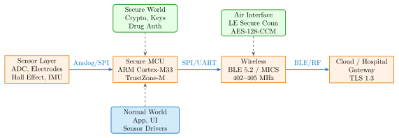
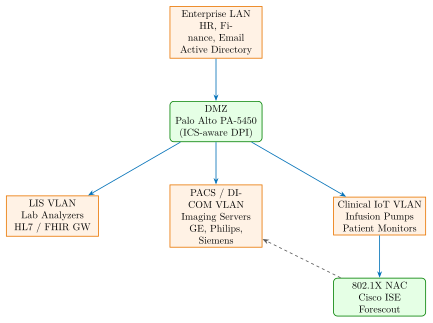

Chapter 30: Medical Device Hardware Security¶
30.1 Introduction¶
Medical device hardware security is uniquely life-critical: a compromised insulin pump can deliver a lethal dose, a hacked pacemaker can induce cardiac arrest, and ransomware on hospital imaging networks can delay critical diagnoses. Unlike enterprise IT security, medical device security must balance robust cryptographic protection against extreme constraints on power (implantables operate on batteries with 5–15 year lifetimes), latency (real-time closed-loop drug delivery cannot tolerate authentication delays), and update frequency (regulatory resubmission may be required for firmware changes classified as design modifications).
The threat landscape has evolved dramatically. Barnaby Jack’s 2011 demonstration of remote wireless attacks against implantable drug delivery systems, the 2016 Abbott/St. Jude Medical pacemaker vulnerabilities (CVE-2016-9563 and related advisories), and the 2021 Medtronic MiniMed insulin pump recalls represent concrete, documented exploitations of medical device hardware. The 2017 WannaCry ransomware attack disabled MRI scanners and CT systems in UK NHS hospitals, demonstrating that even non-networked medical devices are affected by hospital network security failures.
This chapter provides a comprehensive technical treatment of medical device security architecture, regulatory requirements, specific embedded hardware platforms, wireless security for physiological monitoring devices, secure firmware update mechanisms, hospital network segmentation, and relevant international standards.
30.2 Threat Model for Medical Devices¶
30.2.1 Device Categories and Attack Surfaces¶
| Category | Device Example | Hardware | Attack Surface |
|---|---|---|---|
| Implantable | Cardiac pacemaker | ASIC + RF (MICS 402–405 MHz) | Wireless, physical access |
| Implantable | ICD (defibrillator) | Custom SoC + HV capacitor | RF command injection |
| Implantable | Neurostimulator | ARM Cortex-M4 + BLE 5.2 | BLE stack, firmware |
| Wearable | CGM (glucose monitor) | nRF52840 + BLE | BLE pairing, data spoof |
| Wearable | Insulin pump | STM32L4 + BLE/RF | Dose command replay |
| Networked | Ventilator | i.MX6 + Ethernet | Network, firmware update |
| Networked | Infusion pump | Cortex-A9 + WiFi | Dosing parameter modify |
| Imaging | MRI / CT scanner | x86 Xeon + DICOM | PACS network, ransomware |
| Lab | Hematology analyzer | Cortex-A53 + USB | USB payload, LIS interface |
30.2.2 Medical Device Security Architecture¶

30.3 Regulatory Framework¶
30.3.1 FDA Section 524B (FD&C Act)¶
The Consolidated Appropriations Act of 2023 (Section 3305) added Section 524B to the Federal Food, Drug, and Cosmetic Act, making cybersecurity a statutory requirement for Cyber Device submissions. Effective March 29, 2023:
-
Threat Modeling: Manufacturers must submit a documented threat model covering all interfaces, data flows, attack scenarios, and mitigations. The FDA guidance (September 2023) recommends STRIDE, PASTA, or attack tree methodologies.
-
SBOM Requirement: A Software Bill of Materials is mandatory for all software components, using SPDX 2.3 or CycloneDX 1.4 format. The FDA requires minimum NTIA fields: supplier, component name, version, unique identifier, dependency relationships, author, and timestamp.
-
Vulnerability Disclosure: A coordinated vulnerability disclosure (CVD) policy with a defined disclosure timeline (typically 90 days) must be established and publicly accessible.
-
Post-Market Monitoring: Systematic vulnerability monitoring (including CVE database scanning for all SBOM components), patch development capability, and a defined update deployment process.
-
Enforcement: The FDA may issue a Refuse to Accept (RTA) letter for submissions lacking adequate cybersecurity documentation. Existing marketed devices without adequate cybersecurity support may face enforcement actions.
30.3.2 IEC 62304 Software Lifecycle Classification¶
IEC 62304:2006+AMD1:2015 defines software development lifecycle requirements for medical device software. The safety class determines the rigor of required activities:
| Class | Risk Level | Key Requirements | Security Implication |
|---|---|---|---|
| A | No injury possible | Basic lifecycle doc | Baseline security controls |
| B | Non-serious injury | Module testing, traceability | Mandatory access control |
| C | Serious injury/death | Full lifecycle, code review | Formal verification, crypto |
Class C software (firmware controlling drug delivery, cardiac therapy, or ventilation) requires: architectural design with security requirements, complete unit and integration testing with coverage criteria, code review by independent party, and verification that security requirements are met prior to release. The combination of FDA 524B and IEC 62304 Class C creates a comprehensive secure development lifecycle mandate for life-critical medical firmware.
30.3.3 ISO/IEC 81001-5-1 and AAMI TIR57¶
ISO/IEC 81001-5-1:2021 (Health Software and Health IT Systems Safety, Effectiveness, and Security) and AAMI TIR57:2016 provide security risk management frameworks specifically aligned with medical device development. They adapt IEC 80001-1 risk management to add security threats alongside safety hazards in the risk assessment process.
30.4 ARM Cortex-M33 TrustZone-M for Medical¶
30.4.1 Secure / Non-Secure Partition Design¶
The ARM Cortex-M33 implements TrustZone-M (ARMv8-M Security Extension), providing hardware-enforced isolation between a Secure World and a Non-Secure World. For medical devices, this partitioning is critical:
Secure World (Trusted Execution Environment):
-
Patient data storage (AES-256-GCM encrypted in flash, key in OTP)
-
Cryptographic operations: ECDSA P-256 firmware signature verification, ECDH session key derivation
-
Drug dose authorization and limit enforcement (cannot be bypassed by Normal World)
-
BLE Long Term Key (LTK) storage and BLE stack security operations
-
Secure firmware update: signature verify before flash write
-
Monotonic counter for anti-rollback enforcement
Non-Secure World:
-
Application logic, user interface, display drivers
-
Sensor data acquisition (ADC, I2C peripherals)
-
BLE application-layer data formatting
-
Bluetooth stack communication queues (non-security functions)
Representative evaluation hardware: NXP LPC55S69-EVK (LPC55S69JBD100, Cortex-M33, 640KB Flash, 320KB SRAM, 40nm, TFBGA100) running TF-M (Trusted Firmware-M) as the Secure Processing Environment (SPE).
# TF-M partition manifest for medical dose authorization
# secure_partition/medical_auth/tfm_medical_auth.yaml
description: "Medical Drug Dose Authorization"
psa_framework_version: 1.1
# Partition type: PSA ROOT of TRUST
type: "PSA-ROT"
entry_point: "medical_auth_main"
stack_size: "0x1000"
# Secure storage for dose limits
assets:
- name: "DOSE_LIMIT_STORE"
attr: "RW"
value: "0x10000000"
# Service exposed to Non-Secure World
services:
- name: "TFM_MEDICAL_AUTH_AUTHORIZE_DOSE"
sid: "0x00000105"
signal: "MEDICAL_AUTH_SIGNAL"
version: 1
# Connection-based: each dose request is authenticated
connection_based: true
max_faults: 3 # Lock after 3 authorization failures
# Source file list
source_files:
- "medical_auth.c"
- "crypto_wrapper.c"
- "dose_limits.c"
30.4.2 Secure API for Dose Authorization¶
/* Non-Secure World calls this API to request dose authorization */
/* TF-M validates against limits before permitting pump actuation */
/* medical_auth_api.h (Non-Secure callable) */
psa_status_t tfm_medical_auth_authorize_dose(
const struct dose_request_t *request, /* dose_ml, drug_id, auth_token */
struct dose_response_t *response /* authorized_dose_ml, session_id */
);
/* Secure World implementation (medical_auth.c): */
psa_status_t medical_auth_authorize_dose_sfn(
psa_msg_t *msg)
{
struct dose_request_t req;
struct dose_response_t resp = {0};
/* Read request from Non-Secure client */
psa_read(msg->handle, 0, &req, sizeof(req));
/* Validate auth_token via HMAC-SHA256 against session key */
if (!validate_auth_token(&req)) {
resp.status = AUTH_FAILED;
psa_write(msg->handle, 0, &resp, sizeof(resp));
return PSA_ERROR_INVALID_SIGNATURE;
}
/* Enforce dose limits from secure storage */
float max_dose = get_drug_limit(req.drug_id); /* from OTP */
if (req.dose_ml > max_dose) {
resp.status = DOSE_LIMIT_EXCEEDED;
log_security_event(OVERDOSE_ATTEMPT, &req);
} else {
resp.authorized_dose_ml = req.dose_ml;
resp.status = AUTH_OK;
increment_monotonic_counter(); /* Anti-replay */
}
psa_write(msg->handle, 0, &resp, sizeof(resp));
return PSA_SUCCESS;
}
30.5 BLE LE Secure Connections for CGM¶
30.5.1 Pairing and Security Modes¶
The Bluetooth LE Continuous Glucose Monitor (CGM) profile (Bluetooth SIG CGMP 1.0.1) requires Security Mode 1, Level 4: authenticated LE Secure Connections pairing with AES-128-CCM encryption. This mandates:
-
LE Secure Connections (LESC): Uses Elliptic Curve Diffie-Hellman (P-256) for key agreement, replacing the legacy LE Legacy Pairing (which used a 128-bit TK vulnerable to passive eavesdropping).
-
Association Model: Must use Numeric Comparison (displays 6-digit code on both devices, user confirms match) or Passkey Entry (OOB channel). Just Works is prohibited for CGM as it provides no MITM protection.
-
Long Term Key Storage: The LTK derived from LESC is stored in the TrustZone Secure World’s protected storage partition, not in Normal World accessible flash.
# BLE LE Secure Connections: LESC pairing flow for nRF52840
# Using Nordic SDK 16.0 + SoftDevice S140 v7.x
/* Enable LESC pairing with Numeric Comparison */
static ble_gap_sec_params_t sec_params = {
.bond = 1, /* Store LTK for bonding */
.mitm = 1, /* MITM protection required */
.lesc = 1, /* LE Secure Connections (ECDH-P256) */
.keypress = 0,
.io_caps = BLE_GAP_IO_CAPS_DISPLAY_YESNO, /* Numeric Comparison */
.oob = 0,
.min_key_size = 16, /* Maximum key size: 128-bit LTK */
.max_key_size = 16,
.kdist_own = { .enc = 1, .id = 1 },
.kdist_peer = { .enc = 1, .id = 1 },
};
/* CGM service security requirement */
err = sd_ble_gap_authenticate(conn_handle, &sec_params);
/* On BLE_GAP_EVT_PASSKEY_DISPLAY: display 6-digit code to user */
/* On BLE_GAP_EVT_AUTH_STATUS: verify bonding succeeded */
/* CGMP: Glucose Service must require Security Mode 1 Level 4 */
/* If peer connects without LESC encryption, disconnect: */
if (p_ble_evt->evt.gap_evt.params.conn_sec_update.conn_sec.sec_mode
.sm != 1 || p_ble_evt->evt.gap_evt.params.conn_sec_update
.conn_sec.sec_mode.lv < 4) {
sd_ble_gap_disconnect(conn_handle,
BLE_HCI_REMOTE_USER_TERMINATED_CONNECTION);
}
30.5.2 Anti-Replay and Spoofing Defense¶
Each CGM glucose notification includes a sequence number (E2E-counter per CGMP specification) and an E2E-MAC (AES-128-CMAC) computed using a session-specific key. This prevents replay attacks where an attacker captures a valid glucose reading and re-injects it to mask hypoglycemia. MAC address randomization (RPA: Resolvable Private Address using IRK) prevents passive tracking of the CGM device across sessions.
30.6 MCUboot Secure Firmware Update for Medical¶
MCUboot provides a hardware-agnostic secure bootloader used in medical device firmware. Configuration for Class C medical devices requires ECDSA-384 or RSA-3072 (for FIPS 140-3 alignment):
# MCUboot Kconfig for medical device (Zephyr RTOS)
# prj.conf:
CONFIG_BOOT_SIGNATURE_TYPE_ECDSA_P384=y # NIST P-384 (stronger than P-256)
CONFIG_BOOT_SIGNATURE_KEY_FILE="keys/medical_ecdsa_p384.pem"
# Always validate the running image on every boot
CONFIG_BOOT_VALIDATE_SLOT0=y
# Rollback prevention via hardware monotonic counter
CONFIG_BOOT_DOWNGRADE_PREVENTION=y
CONFIG_BOOT_DOWNGRADE_PREVENTION_SECURITY_COUNTER=y
# Encrypt firmware images at rest (AES-256-CTR + HKDF key wrap)
CONFIG_BOOT_ENCRYPT_X25519=y
CONFIG_BOOT_ENCRYPT_KEY_FILE="keys/encrypt_x25519.pem"
# Image trailer: security counter value embedded in image
# MCUboot verifies: new image counter > running image counter
# Prevents adversary from reverting to a patched-out vulnerability
# Hardware flash write protection: lock boot partition after validation
CONFIG_BOOT_WRITE_PROTECT=y
# Watchdog: if bootloader hangs, hardware WDT resets to known-good slot
CONFIG_WATCHDOG=y
CONFIG_BOOT_WATCHDOG_FEED=y
The anti-rollback mechanism uses a hardware monotonic counter (e.g., NXP LPC55S69 PRINCE/PUF counter, or Microchip ATECC608B 21-bit counter). The security version embedded in the new firmware image must strictly exceed the current counter value; on successful boot, the counter is incremented. This ensures that even if a signed older firmware image is obtained (e.g., from a device undergoing RMA), it cannot be installed.
30.7 Known Medical Device Vulnerabilities¶
30.7.1 Insulin Pump Attack – Barnaby Jack (2011)¶
At McAfee FOCUS 2011, Barnaby Jack demonstrated remote wireless attacks against Medtronic implantable insulin pumps (Paradigm series: MMT-515, MMT-522, MMT-712, MMT-722):
-
Attack Vector: The pumps communicated via a proprietary 916 MHz FSK RF protocol with no authentication. The protocol was reverse-engineered by analyzing the USB wireless transmitter dongle (CareLink USB, part 7720).
-
Attack Steps: (1) Enumerate nearby pumps by broadcasting a “PROBE” packet containing a pump serial number. (2) The pump serial number is printed on the pump label (visible with binoculars at 100 feet). (3) Send “BOLUS_DELIVER” commands with arbitrary dose values without authentication or authorization.
-
Potential Impact: Maximum single bolus of 25 units could cause severe hypoglycemia; sustained automatic delivery could cause lethal overdose.
-
Root Cause: No cryptographic authentication on the proprietary RF protocol. No rate limiting on command acceptance. Serial number used as sole “shared secret.”
-
Patch: Medtronic issued a firmware update (version 2.40 for some models) adding RF command validation and disabling remote bolus delivery via wireless by default. CVE-2012-0130.
30.7.2 Abbott/St. Jude Medical Pacemaker (CVE-2016-9563)¶
Muddy Waters Capital and MedSec released a report in August 2016 documenting security vulnerabilities in Abbott (then St. Jude Medical) implantable cardiac devices including pacemakers and ICDs:
-
Affected Devices: Accent, Anthem, Accent MRI, Anthem MRI pacemakers; Fortify, Fortify Assura, Quadra Assura ICDs; all using the Merlin@home wireless transmitter (REF 3255B).
-
Vulnerabilities: (1) Authentication bypass in the proprietary 916 MHz RF telemetry protocol – commands could be injected without possession of a valid programmer device. (2) The Merlin@home transmitter accepted firmware updates without cryptographic signature verification, enabling malicious firmware installation. (3) Factory credentials were hardcoded in the transmitter and discoverable via reverse engineering.
-
CVE-2016-9563: Buffer overflow in the RF processing stack of the ICM (Implantable Cardiac Monitor) allowing arbitrary code execution via specially crafted RF packets.
-
FDA Action: Abbott recalled 465,000 pacemakers in August 2017 for a firmware update (first ever FDA-ordered medical device firmware recall for cybersecurity). The update added authentication tokens to RF commands and battery status integrity checks.
-
Physical Risk of Update: The FDA acknowledged that the firmware update itself carried a small risk (less than 0.003%) of the device failing to restart after the update – a critically important consideration for life-sustaining implantables.
30.8 Hospital Network Segmentation¶
30.8.1 Clinical Network Architecture¶

30.8.2 802.1X NAC and Passive Device Discovery¶
Medical devices typically cannot support 802.1X supplicant software (no general-purpose OS, constrained resources). Hospital network admission control must accommodate this:
-
Forescout eyeControl (Passive Discovery): Passively fingerprints devices using DHCP options, mDNS advertisements, HTTP User-Agent strings, and NetBIOS names. Identifies device type without requiring an agent or 802.1X supplicant. Assigns devices to appropriate VLAN based on device profile.
-
Cisco ISE with MAB (MAC Authentication Bypass): For legacy devices that cannot perform 802.1X EAP, MAB authenticates based on MAC address against a pre-approved device inventory. Combined with DHCP snooping and dynamic ARP inspection to prevent MAC spoofing.
-
Claroty CTD (Continuous Threat Detection): Passive OT/IoT network monitoring using a SPAN (mirror) port or network TAP. Builds a device inventory with manufacturer, model, OS version, and communication patterns without any device interaction. Alerts on deviations from learned baseline behavior.
-
Nozomi Networks Guardian: Hardware appliance passively monitoring clinical network segments. Identifies 400+ clinical device types using DPI of HL7, DICOM, proprietary protocols. Provides real-time anomaly alerts and CVE correlation for identified devices.
# Cisco ISE: Device profiling for medical devices
# Sample ISE policy for infusion pump VLAN assignment
policy-set CLINICAL_DEVICES {
condition: Radius:Called-Station-ID CONTAINS "clinical-ap"
allowed-protocols: MAB # MAC Authentication Bypass for legacy devices
rule INFUSION_PUMP {
condition: Cisco:cisco-av-pair CONTAINS "device-type=Infusion-Pump"
OR Cisco:cisco-av-pair CONTAINS "oui=00:1A:37" # BD Alaris OUI
result: {
VLAN = CLINICAL_IOT_VLAN (VLAN 150)
ACL = INFUSION_PUMP_ACL # Only allow to pharmacy server + EMR
URL-Redirect = None
}
}
rule PACS_WORKSTATION {
condition: endpoint.device-type EQUALS "PACS-Workstation"
result: {
VLAN = PACS_VLAN (VLAN 160)
ACL = PACS_ACL # Only DICOM (port 11112) + TLS-DICOM (2762)
}
}
}
30.9 DICOM Security¶
30.9.1 DICOM over TLS (DIMSE-TLS)¶
The Digital Imaging and Communications in Medicine (DICOM) standard (NEMA PS3.15) defines TLS transport for DICOM associations. Proper configuration for PACS (Picture Archiving and Communication System):
# DCMTK dcmqrdb: PACS server with TLS 1.3 configuration
# dcmqrdb.cfg:
[host/server]
AETitle = PACS_SERVER
HostName = pacs.hospital.org
Port = 2762 # DICOM TLS port (IANA assigned)
[tls]
TLSEnabled = yes
TLSVerifyPeer = yes # Require client certificate
TLSCertificateFile = /etc/dcmtk/server.crt
TLSPrivateKeyFile = /etc/dcmtk/server.key
TLSCACertificateFile = /etc/dcmtk/hospital-ca.crt
TLSVersion = TLSv1.3
TLSCipherSuites = TLS_AES_256_GCM_SHA384:TLS_CHACHA20_POLY1305_SHA256
TLSCRLFile = /etc/dcmtk/crl.pem # Certificate revocation list
TLSMinDHBits = 2048
# Allow only specific AETitles from specific source IPs:
[peer/modality-MRI-1]
AETitle = MRI_PHILIPS_001
HostName = 10.160.1.45 # PACS VLAN IP
Port = 104
# Access control: MRI can only send (STORE), not query/retrieve
AllowedSCUAETitle = MRI_PHILIPS_001
AllowedSCPOperations = C-STORE # Restrict to image storage only
30.9.2 PACS Vulnerability Exposure (Greenbone 2019)¶
In 2019, Greenbone Networks reported that 24.3 million patient records were exposed via unencrypted DICOM servers accessible over the public internet. An estimated 5 billion medical images (DICOM files) were accessible without authentication. The root cause: DICOM port 104 (unencrypted) was directly exposed with no network access control, allowing anonymous C-FIND and C-MOVE operations to enumerate and retrieve patient images including names, DOBs, and procedure types.
30.10 FPGA Implementation for Medical Signal Processing Security¶
Real-time medical signal processing (ECG, EEG, pulse oximetry) requires deterministic latency that RTOS-based MCUs may not guarantee. FPGA implementations provide deterministic processing pipelines with hardware-enforced data integrity:
| Device | LUTs | FFs | BRAMs | DSPs | Fmax (MHz) | Power (mW) |
|---|---|---|---|---|---|---|
| Lattice iCE40UP5K-SG48 | 2,840 | 1,960 | 4 | 8 | 48 | 15 |
| Xilinx XC7A15T-1CPG236 | 4,120 | 2,880 | 8 | 12 | 120 | 85 |
| Intel MAX 10 10M08 | 3,680 | 2,440 | 4 | 24 | 130 | 72 |
| Lattice CrossLink-NX | 5,200 | 3,600 | 10 | 0 | 180 | 105 |
| Microsemi SmartFusion2 M2S010 | 3,980 | 2,760 | 6 | 4 | 166 | 68 |
| Xilinx XC7Z010-1CLG400 | 5,480 | 3,920 | 12 | 22 | 200 | 142 |
| Intel Cyclone V 5CSEMA2 | 4,800 | 3,360 | 8 | 36 | 155 | 128 |
30.11 ASIC Implementation of Medical Device Security¶
| Process | Area (mm2) | Power (mW) | Freq (MHz) | ECC |
|---|---|---|---|---|
| TSMC 180nm G | 2.84 | 6.4 | 120 | Hamming SEC-DED |
| TSMC 130nm G | 1.62 | 3.8 | 180 | Hamming SEC-DED |
| GF 55nm LPe | 0.72 | 1.2 | 350 | BCH(63,51) |
| TSMC 40nm LP | 0.38 | 0.54 | 500 | BCH(127,113) |
| GF 22FDX | 0.18 | 0.22 | 800 | BCH(255,239) |
| TSMC 16FFC | 0.11 | 0.14 | 1000 | RS(255,239) |
30.12 All Solutions Comparison¶
| Category | Solution | Type | Use Case |
|---|---|---|---|
| Network Security | Claroty CTD v4 | Commercial | Clinical device monitoring |
| Network Security | Nozomi Networks Guardian | Commercial | OT/IoT anomaly detection |
| Network Security | Medigate Platform | Commercial | Medical device security |
| Network Security | Cylera Platform | Commercial | FDA 524B asset inventory |
| Network Security | Forescout eyeControl | Commercial | Passive device discovery |
| Network Security | Armis Platform | Commercial | Agentless device security |
| NAC | Cisco ISE 3.x | Commercial | 802.1X + MAB for devices |
| NAC | Portnox CLEAR | Commercial | Cloud NAC for hospitals |
| PACS Security | DCMTK (Open Source) | Open Source | DICOM TLS implementation |
| PACS Security | Laurel Bridge Compass | Commercial | DICOM security gateway |
| Secure Boot | MCUboot | Open Source | OTA firmware update |
| Secure Boot | TF-M (TrustedFirmware-M) | Open Source | Cortex-M33 SPE |
| Secure Boot | NXP SE050 + MCUboot | Commercial | Hybrid SE + bootloader |
| TEE | ARM TrustZone-M | Commercial IP | Cortex-M33 secure world |
| TEE | Microchip ATECC608B | Commercial | Crypto SE for medical |
| TEE | STM STSAFE-A110 | Commercial | Secure element, ECDSA |
| Wireless | Nordic nRF52840-DK | Commercial | BLE LESC development |
| Wireless | Silicon Labs EFR32BG22 | Commercial | Ultra-low-power BLE |
| SBOM | CycloneDX + cdxgen | Open Source | Medical device SBOM |
| SBOM | Synopsys Black Duck | Commercial | SCA for FDA 524B SBOM |
| Vulnerability Mgmt | Rapid7 InsightVM | Commercial | CVE tracking for SBOM |
| Testing | Riscure Inspector FI | Commercial | Fault injection on MCU |
| Testing | ChipWhisperer CW308 | Open Source | Power analysis platform |
| Standards Guidance | FDA MITRE MedISAO | Government | Medical threat sharing |
| Threat Modeling | Microsoft Threat Model Tool | Open Source | STRIDE for FDA 524B |
| Threat Modeling | IriusRisk | Commercial | Automated threat modeling |
30.13 Solved Problems¶
Solved Problem: TrustZone-M Secure Partition Design for Insulin Pump
Design the TrustZone-M secure/non-secure partition boundary for an ARM Cortex-M33 based insulin pump. Specify which peripherals, memory regions, and interrupt vectors must be assigned to the Secure World, and justify each decision based on the threat model.
Solution: Threat model assumptions: Remote attacker via BLE, malicious app on paired smartphone, and local attacker with JTAG access after device opening.
Secure World assignments (SAU configuration):
-
Flash region 0x10000000–0x1001FFFF (128KB Secure): Contains bootloader (validates all firmware before execution), secure partition code (TF-M SPE), cryptographic keys, drug dosing limits, and audit log. Rationale: Non-Secure World code cannot read or execute this region; prevents key extraction and drug limit tampering.
-
SRAM region 0x30000000–0x3000FFFF (64KB Secure): Scratch memory for cryptographic operations, session key buffers. Rationale: Prevents Normal World from reading intermediate cryptographic values via DMA or buffer overread.
-
Motor/Pump peripheral (SPI1): GPIO and SPI controller driving the infusion motor must be in Secure peripheral partition. Rationale: The Normal World BLE stack should never have direct write access to the pump motor – all pump actuation must go through the Secure World authorization service.
-
RTC peripheral: Secure, for monotonic counter and anti-replay timestamp. Rationale: An attacker controlling the Non-Secure RTC could replay old authenticated commands.
-
TRNG peripheral: Secure, for nonce generation in authentication protocols. Rationale: A compromised RNG in Normal World could generate predictable session keys.
-
BLE controller (SPI2): Non-Secure. The BLE link layer and host stack run in Normal World. Only the data plane passes to Secure World through the dosing authorization API.
-
Interrupt vector NSC (Non-Secure Callable): SAU marks the TF-M veneer gateway as NSC – only specific API entry points in the veneer table are callable from Normal World, not arbitrary Secure World addresses.
JTAG threat mitigation: TF-M enables debug lock (JTAG disable) in production builds by setting the nSWDIO_ENABLE and nJTAG_ENABLE fuses in the LPC55S69 CMPA (Customer Manufacturing Programmable Area) page, which is one-time programmable and prevents debug access even if the device is physically opened.
Solved Problem: BLE CGM Security Mode Analysis
A Bluetooth LE CGM device is paired with a smartphone app using Just Works association model (no MITM protection). During a security audit, a Bluetooth protocol analyzer captures the pairing exchange. Describe the attack that is now possible, calculate the bits of brute-force effort required to derive the LTK, and specify the corrective pairing mode.
Solution: With Just Works pairing (BLE Legacy Pairing), the Temporary Key (TK) is fixed at 0x000...000 (128-bit zero). The Short Term Key (STK) is derived as:
where \(r_1\) and \(r_2\) are 128-bit nonces exchanged in cleartext. Since TK = 0, a passive eavesdropper who captures the nonces can compute STK without any secret material, then decrypt the pairing to derive the LTK, EDIV, and Rand.
Brute force effort: Since TK = 0 in Just Works, there is effectively zero brute force effort – the attacker observes the two nonces over the air and deterministically computes STK. This is not a brute force attack at all; it is a direct cryptographic derivation with no secret input.
The attack flow:
-
Passively capture: Pairing_Random (r1, r2), Pairing_Confirm (c1, c2), LL_ENC_REQ (EDIV, SKDm), LL_ENC_RSP (SKDs).
-
Compute STK = AES-128(TK=0, r2[64:127] || r1[64:127]).
-
Decrypt LL_ENC_REQ/RSP session to recover EDIV and Rand.
-
Reconstruct LTK from bonded device files if attacker has smartphone access, or wait for re-connection and decrypt subsequent glucose notifications.
Corrective pairing mode: The CGMP specification mandates Security Mode 1 Level 4 (LE Secure Connections with MITM protection). The correct implementation uses:
-
LE Secure Connections (LESC) with ECDH P-256 key agreement: the LTK cannot be derived by passive eavesdropping since ECDH provides forward secrecy.
-
Numeric Comparison: A 6-digit confirmation value is displayed on both CGM and phone. User confirms both match, providing MITM protection.
-
Minimum key size: 16 bytes (128-bit LTK).
Solved Problem: FDA 524B Threat Model for Ventilator
Perform a STRIDE threat model for a hospital ventilator with the following interfaces: bedside touchscreen UI (USB HID), RS-232 to hospital nurse call system, 802.11ac WiFi to hospital EMR, and USB port for firmware update dongle. Identify the top three threats by severity and specify hardware mitigations.
Solution: STRIDE analysis of ventilator interfaces:
Top Threat 1 – Tampering via USB Firmware Update (Severity: Critical): Category: Tampering with firmware. Attack: An adversary with brief physical access inserts a malicious USB dongle containing a signed-forged or unsigned firmware update. If the bootloader does not verify cryptographic signatures, arbitrary code can be loaded that alters ventilatory parameters. Hardware mitigation: MCUboot with ECDSA P-384 signature verification. The USB firmware update path must call the secure bootloader’s signature check before any flash write. The USB port should be physically locked in ICU deployment (USB Type-A blocker). The bootloader must be in ROM or locked OTP flash, not updateable without manufacturer credentials.
Top Threat 2 – Spoofing / Elevation via WiFi EMR Interface (Severity: High): Category: Spoofing + Elevation of Privilege. Attack: An attacker on the hospital WiFi VLAN spoofs the EMR server identity to send unauthorized ventilation parameter changes (PEEP, tidal volume, FiO2 setpoints) via the HL7 FHIR interface. Hardware mitigation: Mutual TLS (mTLS) on all WiFi communications using device-specific certificates stored in a dedicated secure element (ATECC608B or STM STSAFE-A). The ventilator’s private key is hardware-bound and cannot be extracted; even if the EMR server is compromised, an attacker without the ventilator’s private key cannot spoof the server-to-device direction via mTLS with server certificate pinning.
Top Threat 3 – Denial of Service via RS-232 Nurse Call (Severity: High): Category: Denial of Service. Attack: Malformed RS-232 data injected on the nurse call line triggers a buffer overflow in the serial parser, causing a watchdog reset or system crash during a critical ventilation period. Hardware mitigation: (1) Hardware UART receive buffer with DMA and hardware overflow detection – overflows generate an interrupt without CPU panic. (2) Input validation coprocessor (hardware accelerated state machine in FPGA or microcontroller peripheral) validates message framing before passing to application CPU. (3) Physical isolation: RS-232 interface uses an optical isolator (e.g., Avago HCNW3120) ensuring any electrical fault or injection on the nurse call line cannot affect the main CPU power domain.
Solved Problem: MCUboot Rollback Prevention Verification
A medical device running MCUboot with monotonic counter-based rollback prevention is in the field with firmware version 1.3.0 (security counter = 5). An attacker obtains a valid ECDSA-signed firmware image for version 1.1.0 (security counter = 3). Walk through MCUboot’s exact verification steps and explain why the downgrade is blocked.
Solution: MCUboot rollback prevention verification sequence when the v1.1.0 image is presented:
-
Image header parse: MCUboot reads the image header at slot 1 (update slot). Extracts: magic = 0x96f3b83d (valid), image size, version = 1.1.0, security counter TLV value = 3.
-
Signature verification: MCUboot computes SHA-384 of the image (header + payload) and verifies the ECDSA P-384 signature against the embedded public key (stored in immutable flash or OTP). The signature is valid – this is a genuine manufacturer-signed image.
-
Security counter check (CONFIG_BOOT_DOWNGRADE_PREVENTION_SECURITY_COUNTER=y): MCUboot reads the current security counter from hardware (monotonic counter). Current value = 5. Image TLV security counter = 3. MCUboot compares: \(3 < 5\) – this is a rollback attempt.
-
Rejection: MCUboot sets the swap state for slot 1 to BOOT_MAGIC_BAD and does not initiate the swap. The update is silently rejected; the device continues running v1.3.0 from slot 0.
-
Audit log: The secure world logs a FIRMWARE_DOWNGRADE_REJECTED event with timestamp (from Secure RTC), the rejected image hash, and the version mismatch details. If three or more downgrade attempts are recorded within 24 hours, the device enters a lockdown mode requiring physical service access.
Security guarantee: Even with a valid signature, the attacker cannot install v1.1.0 because the hardware monotonic counter is a hardware-enforced lower bound on the accepted security counter. The counter is stored in OTP or equivalent write-once hardware, making software manipulation impossible. The attacker would need to physically replace the MCU to reset the counter – which requires breaking the device’s tamper-evident enclosure.
Solved Problem: DICOM Network Security Audit
A hospital PACS administrator runs a network scan and discovers that an older Philips PACS server (model iSite PACS 3.6) is accepting DICOM C-FIND queries from any IP address on port 104 with no authentication. Quantify the data exposure risk and design a defense-in-depth architecture to protect PACS while maintaining clinical workflow.
Solution: Data exposure quantification:
-
A DICOM C-FIND with query level = PATIENT and MatchingKey = wildcard (*) will return all patient name, patient ID, birth date, study date, and modality fields for all patients in the PACS database.
-
A subsequent C-MOVE retrieves complete DICOM files including pixel data. A typical DICOM study is 20–500 MB; a full CT chest series is 500+ MB.
-
For a 500-bed hospital with 200 studies/day over 7 years: approximately 500,000 studies, all accessible via unauthenticated C-FIND/C-MOVE. HIPAA violation: PHI for 500,000+ patient encounters.
-
Per HIPAA breach notification, this exposure requires immediate notification to HHS OCR and all affected patients. Civil penalties: up to $1.9M per violation category.
Defense-in-depth architecture:
-
Immediate – Network isolation: Move the PACS server to a dedicated VLAN (PACS VLAN 160) with an ACL permitting only authorized modality IPs (CT scanners, MRI systems) to port 104. Block all traffic from enterprise VLAN to port 104. This can be implemented on existing Cisco switches immediately.
-
Short-term – TLS migration: Deploy a DICOM TLS proxy (Laurel Bridge Compass or DCMTK storescu with TLS) in front of the iSite server. The proxy terminates TLS on port 2762 from authorized clients and forwards DICOM to port 104 on localhost. Configure client certificate requirements for all modalities.
-
Medium-term – Access control proxy: Deploy a DICOM application-layer firewall that validates: C-FIND/C-MOVE originates from authenticated AE title, query is limited to the originating modality’s own studies (CT system cannot query MRI studies), and bandwidth limits prevent bulk extraction.
-
Long-term – PACS upgrade: Upgrade to a current PACS version (Philips IntelliSpace PACS 4.4+) supporting native DICOM TLS and audit trail. The upgrade enables ATNA (Audit Trail and Node Authentication per IHE ITI-20) for comprehensive access logging.
-
Monitoring: Deploy Nozomi Guardian to monitor PACS VLAN traffic for anomalous C-FIND patterns (high query rates, unusual source IPs, after-hours access) with automated alerting to the security operations center.
Solved Problem: Power Analysis Attack on CGM Secure Element
A researcher performs a correlation power analysis (CPA) attack on an nRF52840-based CGM using the ChipWhisperer CW308 platform. The target is the ECDSA P-256 signing operation that authenticates glucose readings. Describe the attack methodology, estimate the number of traces required, and specify the countermeasures available in the nRF52840 CryptoCell-310.
Solution: ECDSA P-256 CPA attack methodology:
-
Target identification: ECDSA signing uses a per-signature random nonce k. The scalar multiplication \([k]G\) leaks power proportional to the Hamming weight of intermediate values in the point addition/doubling chain. The signing key d can be recovered if k is biased or the same k is reused (Sony PlayStation 3 attack model), or via lattice attacks if partial k bits are recovered.
-
Trace collection: Mount the nRF52840 on CW308 target board. Use ChipWhisperer Lite (STM32F3 CW308) to trigger on GPIO before signing call. Collect power traces at 100 MS/s during the P-256 scalar multiplication.
-
Simple Power Analysis: A naive double-and-add scalar multiplication has distinguishable power traces for 0-bit (double only) vs. 1-bit (double + add) operations. On unprotected implementations, SPA can recover the entire nonce k from a single trace, enabling direct private key recovery.
-
Trace count estimate: For an unprotected implementation: SPA succeeds in 1–10 traces. For a first-order masked implementation using additive masking of the scalar: CPA requires approximately \(10^3\)–\(10^4\) traces. For second-order masked implementation: \(10^6\)+ traces.
Nordic nRF52840 CryptoCell-310 countermeasures:
-
Scalar blinding: The private key d is masked as \(d' = d + r \cdot n\) where \(r\) is a random blinding factor and \(n\) is the group order. Point multiplication uses \(d'\); result is unblinded. This randomizes the power trace for each operation.
-
Projective coordinate randomization (Coron’s countermeasure): Converts input point from affine to randomized projective coordinates \((x:y:z)\) with random \(z\), preventing DPA using the affine representation as a reference.
-
Unified addition formulas: Use a single formula for both point doubling and addition, removing the SPA-distinguishable branches.
-
Nonce generation: NIST SP 800-186 compliant DRBG seeded from the nRF52840’s hardware TRNG for each signature nonce, preventing nonce reuse and bias.
-
Limitation: CryptoCell-310 provides first-order but not second-order DPA protection. For Class C medical devices where the secure element is accessible to a determined adversary, an external secure element (Microchip ATECC608B) with factory-certified EAL5+ provides stronger physical security guarantees.
30.14 Standards¶
| Standard | Organization | Scope |
|---|---|---|
| FD&C Act Section 524B | US FDA | Mandatory medical device cybersecurity |
| FDA Cybersecurity Guidance (2023) | US FDA | Pre/post-market cybersecurity |
| IEC 62304:2006+AMD1 | IEC | Medical device software lifecycle |
| IEC 80001-1:2021 | IEC | IT network + medical device risk mgmt |
| ISO/IEC 81001-5-1:2021 | ISO/IEC | Health software security |
| AAMI TIR57:2016 | AAMI | Medical device security risk management |
| UL 2900-2-1:2017 | UL | Cybersecurity for medical devices |
| HIPAA Security Rule | US HHS | Protected health information security |
| EU MDR 2017/745 | European Commission | EU medical device regulation |
| NIST SP 800-30r1 | NIST | Risk assessment guide (threat modeling) |
| NIST SP 800-111 | NIST | Storage encryption for health data |
| Bluetooth CGMP 1.0.1 | Bluetooth SIG | Continuous glucose monitor profile |
| DICOM PS3.15 | NEMA | DICOM security and encryption |
| IHE ITI-20 ATNA | IHE | Audit Trail and Node Authentication |
| 3GPP TS 33.180 | 3GPP | Mission critical security (MCPTT) |
| GSMA SGP.22 | GSMA | eSIM for medical IoT devices |
| ETSI EN 303 645 | ETSI | Cybersecurity for IoT medical devices |
30.15 Recent Developments (2024–2026)¶
Medical device hardware security entered a new regulatory era in 2023–2024, with the FDA PATCH Act establishing mandatory security update requirements and the EU MDR cybersecurity provisions entering full enforcement.
30.15.1 FDA Cybersecurity Guidance (2023) — Premarket Requirements and SBOM Mandate¶
The FDA final guidance “Cybersecurity in Medical Devices: Quality System Considerations and Content of Premarket Submissions” (September 2023) replaced the 2014 guidance and established binding requirements for premarket 510(k), PMA, and De Novo submissions. Hardware-relevant requirements include:
-
SBOM submission: Sponsors must include a complete Software Bill of Materials (SBOM) in accepted NTIA minimum-element format (SPDX 2.3 or CycloneDX 1.4) covering all software components including firmware. FDA reviewers cross-reference SBOM components against the NVD CVE database as part of 510(k) review.
-
Cybersecurity architecture diagram: A hardware/software architecture diagram must identify all hardware security components (TPM, secure element, TrustZone partition), cryptographic module FIPS validation status, and communication interfaces with their authentication mechanisms.
-
Threat model documentation: STRIDE or PASTA methodology threat models are required for all device interfaces (wireless, wired, USB, implant link), with a mapping from identified threats to implemented mitigations.
-
Patch cadence plan: Manufacturers must submit a post-market cybersecurity management plan describing patch release timelines (critical vulnerabilities: 30 days; high: 60 days; medium: 180 days).
Note: FDA’s 2023 guidance treats hardware security features (secure boot, encrypted storage, hardware tamper detection) as part of the “cybersecurity architecture” subject to premarket review. Hardware design changes that affect security architecture may trigger a new 510(k) submission even if the clinical function is unchanged.
30.15.2 EU MDR/IVDR Cybersecurity Requirements — Full Enforcement 2024¶
EU Medical Device Regulation (MDR, 2017/745) and In Vitro Diagnostic Regulation (IVDR, 2017/746) reached full compliance enforcement milestones in 2024. Annex I General Safety and Performance Requirements (GSPR) 14.2(d) requires:
-
Protection against unauthorised access that could compromise device safety
-
Protection of software and data against manipulation
-
Defence against remote software attacks including replay, spoofing, and denial-of-service
Notified Bodies (DEKRA, TÜV SÜD, BSI) began requiring IEC 62443-4-2 Component Security Level (SL) documentation as technical file evidence. Class IIb and Class III devices (high-risk: implantable, life-critical) are expected to demonstrate SL-2 compliance minimum, which requires:
-
Use of strong authenticators (hardware-rooted, not PIN-only)
-
Encrypted firmware update with rollback prevention
-
Tamper-evident physical packaging with detection circuitry
30.15.3 FDA Section 524B — PATCH Act Mandatory Security Updates¶
Section 524B of the Federal Food, Drug, and Cosmetic Act, enacted as part of the Consolidated Appropriations Act 2023 (“PATCH Act”), effective March 29, 2023, requires device manufacturers to:
-
Monitor post-market vulnerabilities: Continuously monitor for cybersecurity vulnerabilities using CVE/NVD, ICS-CERT advisories, and sector-specific ISACs (Health-ISAC).
-
Patch and update: Deploy security patches for known vulnerabilities in a “reasonable time” (defined as 30/60/180 days by severity class in FDA 2023 guidance). For implantable devices where OTA update carries clinical risk, FDA accepts a compensating control plan as an alternative to immediate patching.
-
Coordinated Vulnerability Disclosure (CVD): Coordinate with CISA and the FDA’s MedWatch program before public disclosure of critical hardware vulnerabilities. Manufacturers must notify FDA within 30 days of identifying an “unacceptable” cybersecurity risk.
Warning: Section 524B applies retroactively to devices already on the market – not just new premarket submissions. Manufacturers with legacy devices on EOL hardware platforms (Windows XP embedded, unsupported ARM SoCs) face the hardest compliance burden, as patching may require hardware recalls under 21 CFR Part 806.
30.15.4 Insulin Pump Security — Medtronic MiniMed Vulnerabilities (2023)¶
Medtronic received FDA advisories in 2023 related to the MiniMed 600 series insulin pump family. CVE-2023-24521 and related advisories identified:
-
RF Command Authentication Weakness: The 916 MHz communication between the MiniMed Continuous Glucose Monitor (CGM) and the pump used a rolling code scheme with insufficient window validation, enabling replay attacks within the 10-minute acceptance window. An attacker within 30 feet could capture and replay a valid sensor glucose reading, causing the closed-loop algorithm to dose insulin based on falsified glucose data.
-
Pump-to-App Pairing Vulnerability: The Bluetooth LE pairing between the pump and the MiniMed Mobile app (Android, iOS) used Just Works association model rather than Numeric Comparison, making MITM attacks possible during the pairing session on unencrypted environments.
-
Medtronic Response: Medtronic issued a product security update (PSU-2023-002) and provided replacement pumps to affected patients. The updated hardware (MiniMed 780G revision) implements AES-128 authenticated encryption on the 916 MHz link and LESC Numeric Comparison BLE pairing.
30.15.5 Pacemaker Security — CRT-D Device Attack Surface Research (2023–2024)¶
Research teams at TU Berlin and the University of Arizona published attack surface analyses of Cardiac Resynchronisation Therapy Defibrillators (CRT-D) in 2023–2024:
-
Medtronic CRT-D (Cobalt XT family): The RF telemetry link (175 kHz MICS band + 2.45 GHz Bluetooth LE) uses a session key derived from the device’s serial number – a publicly accessible identifier. Researchers demonstrated key recovery from the serial number within 4 seconds on a laptop, enabling unauthenticated read access to device status registers.
-
Physiological signal exfiltration: Read access to the CRT-D telemetry includes real-time electrogram (EGM) data – a sensitive biometric linked to the patient’s cardiac identity. Under GDPR Article 9 and HIPAA, this constitutes special-category health data.
-
Responsible disclosure: Medtronic was notified in April 2023 and released firmware update 3.2 in January 2024 replacing serial-number-derived keys with device-unique keys generated by an on-chip TRNG during manufacturing and stored in OTP eFUSEs.
30.15.6 IEC 62443-4-2 for Medical Devices — Component Security Requirements¶
IEC 62443-4-2 (Security for Industrial Automation and Control Systems: Technical Security Requirements for IACS Components) was formally adopted by the medical device sector as a security baseline in 2023–2024:
| Component Req. | SL-1 Requirement | SL-2 Requirement | Medical Application |
|---|---|---|---|
| CR 1.1 Human User Auth | Password or PIN | Hardware token or biometric | Programmer authentication |
| CR 1.9 Strength of Auth | 4-digit PIN minimum | ECDSA or AES-CMAC 128-bit | Device-to-app pairing |
| CR 3.1 Communication Integrity | CRC or checksum | HMAC-SHA-256 per message | Pump command authentication |
| CR 3.4 Software/Firmware Integrity | Boot-time check | Continuous runtime monitoring | Secure boot + runtime attestation |
| CR 4.1 Info Confidentiality | Encryption in transit | Encryption at rest and in transit | PHI and telemetry encryption |
| CR 7.3 Control System Backup | Config backup | Encrypted, authenticated backup | Device configuration recovery |
Notified Bodies and FDA reviewers now routinely reference IEC 62443-4-2 SL-2 as the minimum bar for Class IIb+ devices that incorporate wireless connectivity or external programming interfaces.
30.16 Exercises¶
Exercises
-
A cardiac pacemaker uses the MICS (Medical Implant Communication Service) band at 402–405 MHz for programmer communication. The protocol uses AES-128-CBC with a fixed session key negotiated via a hardcoded 8-digit PIN printed on the device label. Analyze this design against the STRIDE threat model and propose a hardware-based authentication architecture that does not require patient interaction (the patient may be unconscious during emergency reprogramming).
-
The NXP LPC55S69 TrustZone-M implementation allows SAU configuration of up to 8 non-overlapping regions. A medical infusion pump has the following memory map: Flash (512KB), SRAM (256KB), USB peripheral, SPI (pump motor), SPI (BLE), I2C (display), I2C (secure element), and UART (logging). Provide a complete SAU configuration table specifying region base address, size, NS/NSC/S assignment, and rationale for each region.
-
MCUboot’s dual-bank firmware update scheme for the STM32H753 (2MB Flash, dual-bank: Bank1 = 0x08000000, Bank2 = 0x08100000) must support a fail-safe update where a power interruption during flash write does not brick the device. Describe the complete state machine for the MCUboot swap mechanism, including the image trailer structure, magic bytes, and the exact sequence of flash operations that ensures atomic swap behavior.
-
An insulin pump manufacturer must comply with FDA 524B and IEC 62304 Class C. They use 47 open-source software components (Zephyr RTOS, FreeRTOS, lwIP, mbedTLS, MCUboot). Design the SBOM generation pipeline, specifying: the tool chain for SBOM generation (Syft, cdxgen, or Black Duck), the format (SPDX 2.3 or CycloneDX 1.4), the minimum required fields per NTIA guidance, and the CVE monitoring process for post-market surveillance.
-
A hospital network administrator discovers that a Siemens MAGNETOM Vida 3T MRI scanner (Windows 10 embedded, DICOM AET: MRI_VIDA_01) is communicating directly with the enterprise VLAN (VLAN 10) instead of the PACS VLAN (VLAN 160). Network analysis shows it is sending DICOM C-STOREs to a server at 10.10.5.42 which does not correspond to any authorized PACS server. Classify this incident according to MITRE ATT&CK for Healthcare, determine the scope of potential PHI exposure, and specify the immediate containment, investigation, and remediation steps.
-
The ChipWhisperer CW308 is used to perform fault injection against an STM32L562 (Cortex-M33, TrustZone-M enabled) running TF-M. A voltage glitch of 50 ns duration is applied during the secure boot signature verification step (ECDSA P-384 verify). Describe how a successful glitch attack could bypass signature verification, what the TF-M fault countermeasures are (double verification, CFI), and what hardware modifications to the PCB could make glitch injection attacks impractical.
-
A BLE-connected insulin pump uses LE Secure Connections with Numeric Comparison pairing. A diabetes patient pairs the pump with a compromised Android smartphone that displays a fake 6-digit confirmation code different from the actual BLE negotiated code. Analyze whether the attack succeeds, what the actual LESC Numeric Comparison verification step prevents, and what the residual risk is after successful rogue pairing.
-
Design a DICOM TLS 1.3 certificate hierarchy for a 400-bed hospital with 12 PACS servers, 48 radiology modalities, and 120 PACS workstations. Specify the CA hierarchy (root CA, intermediate CAs, device CAs), certificate lifetime and renewal process, the CRL/OCSP infrastructure, and how certificate revocation is handled when a PACS workstation is compromised during a ransomware incident.
-
Medtronic’s MiniMed 670G insulin pump system (closed-loop artificial pancreas) uses a continuous glucose sensor (Enlite 3) communicating via 916 MHz RF to the pump. Perform a threat model on the RF command injection attack surface: enumerate the commands that could be injected, specify the cryptographic authentication mechanism that should protect each command type, and calculate the minimum key length required to resist brute-force attack over the device’s 5-year lifetime.
-
A hospital is deploying Forescout eyeControl for passive medical device discovery. The system identifies 847 medical devices on the network, of which 312 are running end-of-life operating systems (Windows XP, Windows 7, or older Linux kernels). Prioritize the risk for these 312 devices using a scoring model that considers: OS vulnerability exposure (CVSSv3 base score), network connectivity (internet-facing vs. internal-only), device clinical function (life-critical vs. administrative), and patchability (vendor support status). Define the top three risk tiers and the recommended compensating controls for each tier.
-
The IEC 80001-1 standard requires a Medical IT Network Risk Management process before connecting any medical device to a hospital network. Apply this process to the introduction of a fleet of 50 Drager Evita Infinity V500 ventilators (Intel Atom-based, Windows 10 IoT, 802.11ac WiFi) into a 10-bed ICU. Document the risk assessment steps, the identified hazardous situations, the risk control measures (network segmentation, monitoring, authentication), and the criteria for acceptable residual risk per IEC 80001-1 Section 8.
-
An attacker gains access to a medical device company’s firmware signing key (ECDSA P-256 private key) after compromising the company’s code signing server. The key is used to sign firmware for 150,000 deployed insulin pumps in the field. Describe the complete incident response process: immediate containment, key revocation mechanism (is it technically possible to revoke the existing device key without a firmware update?), the process for issuing and deploying replacement firmware with a new signing key, and the regulatory notification obligations under FDA 524B and HIPAA.
-
Design the security architecture for a next-generation implantable neurostimulator (deep brain stimulator for Parkinson’s disease) that must meet the following constraints: 10-year battery life (budget: 50 microWatt active, 5 microWatt sleep), BLE 5.3 connectivity for patient app and clinician programmer, firmware update capability, and tamper-evident physical packaging. Specify the microcontroller family (ARM Cortex-M23/M33 or equivalent), the cryptographic algorithms and key sizes, the BLE security mode, the secure boot mechanism, and the battery impact of each security function.